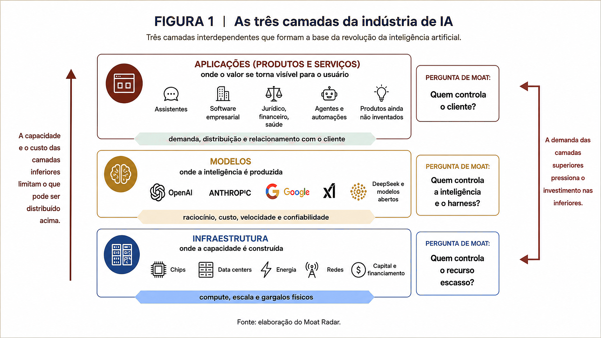
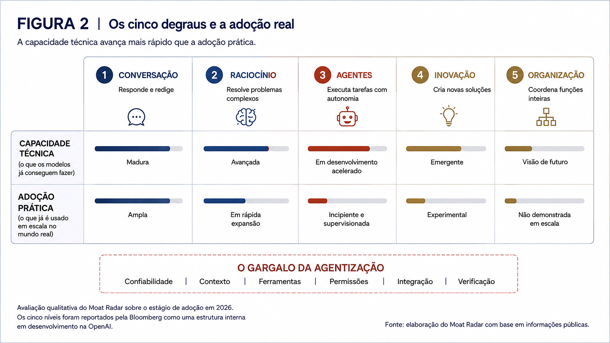

A corrida trilionária da IA: por que ninguém pode desacelerar?
O que leva essa indústria a avançar numa velocidade assustadora, em busca de modelos cada vez mais inteligentes, investindo loucamente em tão pouco tempo?
por Jorge Rocha
O Moat Radar nasceu para ser uma bússola, um farol, que ajude o leitor a navegar melhor por essa nova revolução da inteligência artificial. Propomos olhar esse mercado através de seis dilemas, três do lado da demanda e três do lado da oferta. Neste artigo, cruzamos dois desses dilemas: o dilema corporativo (adoção), no lado da demanda, e capex vs. bolha, do lado da oferta.
Os alicerces
Para explicar a corrida por capex e modelos superinteligentes, precisamos antes responder a duas perguntas: o que é preciso para um modelo de IA funcionar, na prática? E até onde os grandes laboratórios acreditam que essa tecnologia pode chegar?
A primeira delas: o que é preciso para um modelo de IA funcionar, na prática? Pense em três camadas empilhadas (figura 1). Lá embaixo está a infraestrutura: os chips, os data centers, a energia elétrica, a rede que conecta tudo isso. É o parque industrial. No meio está o modelo: o sistema treinado com uma quantidade gigantesca de dados que aprendeu a reconhecer padrões e gerar respostas. É o cérebro. Nesse nível já reconhecemos os modelos que testamos e adotamos, tanto no nível pessoal quanto das organizações: o Claude, da Anthropic, o ChatGPT, da OpenAI, o Gemini, do Google, o Grok, da xAI, para mencionar alguns dos mais reconhecidos do mercado.
Em cima está a aplicação: o produto que você, usuário final, realmente toca. É a vitrine. Embora já existam milhares de aplicações, poucas categorias além de assistentes gerais e ferramentas de codificação demonstraram, até agora, uso recorrente, integração profunda e monetização duradoura, e é exatamente aí que se abre um grande mar de oportunidades para as empresas de tecnologia. Podemos comparar este momento com a chegada da internet dos anos 90, quando os usos eram muito básicos, como ler um jornal, e não tínhamos nenhuma ideia de quão profundamente os produtos e serviços associados a ela transformariam nossas vidas. A internet móvel, a computação em nuvem e os smartphones criaram, em conjunto, ecossistemas como Waze, Uber e inúmeros serviços que hoje consideramos indispensáveis. Essa camada de produtos e serviços é a que mais gera valor para toda a indústria, e nessa nova revolução sequer temos ideia do que vem pela frente.

FIGURA 1 · As três camadas da indústria de IA · Moat Radar
Vemos uma camada clara do lado do consumidor, em demanda, uma camada clara de supply, a infraestrutura, e uma camada híbrida nos modelos. Aqui emerge outra pergunta: à medida que produtos e serviços fiquem mais conhecidos e usados, todas as camadas abaixo deles passarão a ser tratadas como commodities? Modelos deixarão de ser relevantes para o consumidor, assim como hoje sequer nos lembramos que, nos anos 90, precisávamos comprar um kit de conexão e pagar um provedor para nos mantermos conectados à internet, só para usá-la em tarefas tão simples como acessar jornais, ver notícias e usar um e-mail? Será que em alguns anos já não estaremos mais debatendo se usamos o Grok ou o Claude e defendendo suas habilidades?
Vale agora passarmos à segunda pergunta, que nos ajudará a entender um pouco melhor a indústria de IA: qual é a visão de destino apresentada por um dos principais laboratórios de IA1? Em julho de 2024, a Bloomberg conseguiu capturar uma discussão interna da OpenAI que desenhava um caminho para o desenvolvimento dessa indústria, que ainda estava começando a se formar. Ela propunha uma evolução em cinco degraus, como podemos ver na figura 2.
No primeiro degrau, sistemas conversacionais: mantêm um diálogo natural, respondem perguntas e redigem textos a partir de padrões aprendidos, é o que já usamos todos os dias nas ferramentas citadas acima. No segundo, sistemas capazes de raciocinar em nível humano: a diferença aqui não é conversar bem, é pensar em etapas antes de responder, quebrar um problema complexo, testar hipóteses, chegar a uma solução como um especialista faria, o tipo de capacidade que passou a alcançar desempenho muito elevado em benchmarks de matemática e código no último ano. No terceiro estão os agentes, sistemas capazes de agir com autonomia em nome do usuário. Essa é a fronteira que a indústria tenta transformar em adoção prática agora, ainda predominantemente em ambientes delimitados e com supervisão. No quarto, os modelos que ajudam a inventar, criam caminhos e soluções não propostas pelo humano. No quinto, os sistemas que fazem o trabalho de uma organização inteira, orquestrando agentes inteligentes em todas as frentes de criação de valor.

FIGURA 2 · Os cinco degraus e a adoção real · Moat Radar
Na figura, podemos comparar a visão da OpenAI com a adoção real de cada degrau nesses últimos anos. A partir do segundo estágio, porém, abre-se uma distância crescente entre a capacidade técnica demonstrada pelos modelos e sua adoção prática. Os early adopters seguramente têm sido os programadores, que passaram a acelerar seu trabalho de codificação com o uso de modelos. E vemos, neste último ano, uma adoção acelerada por usuários para pesquisa, produção de textos e execução de operações mais rotineiras, como confecção de contratos etc. Em alguns casos, poucos consumidores já iniciam automação de tarefas com o uso de agentes de IA. No nível corporativo, esse estágio parece muito mais incipiente.
O relevante aqui é que o degrau entre o uso cotidiano de modelos, como consulta e execução de tarefas, e a agentização parece muito mais complexo do que se imaginava. Em muitos casos, o que se vê são automações básicas, que não exigem elevado grau de sofisticação ou raciocínio dos modelos. O que nos leva a mais uma pergunta: se os modelos têm sido usados para tarefas tão básicas, ou para codificar, por que os laboratórios estão correndo tanto para ter o modelo mais rápido, eficiente e mais inteligente do mercado?
Quem perde
A Anthropic lançou plugins jurídicos capazes de automatizar partes da revisão contratual, triagem de NDAs, compliance, elaboração de briefings e respostas padronizadas. O que assustou o mercado, em fevereiro de 2026, não foi apenas a evolução do modelo, mas o sinal de que o dono do modelo começava a capturar diretamente workflows antes atendidos por softwares especializados. Isso foi interpretado pelo mercado como um sinal de que parte do valor capturado pelo intermediário poderia ser comprimida, não como prova de que ele deixaria de existir. A Thomson Reuters caiu perto de 18%, a RELX 14%, e dois índices da S&P que acompanham software, dados financeiros e bolsas perderam, juntos, aproximadamente US$ 300 bilhões em valor de mercado naquele dia.
O episódio contaminou o resto do setor de SaaS, que passou a ser tratado como incumbente em risco de obsolescência, mesmo fora do jurídico. Em 22 de junho de 2026, a Salesforce acumulava queda de 43% no ano, apesar de o ARR (receita anual recorrente) do Agentforce ter crescido 205% em relação ao ano anterior, para US$ 1,2 bilhão. A Atlassian, por sua vez, chegou a cair 46% em seis meses, o tipo de contraste que mostra que o mercado está precificando um risco estrutural, não o resultado do trimestre.
Nem gigantes sólidos de tech escapam da mesma lógica, só que numa velocidade ainda administrável. Segundo a Similarweb, 68% das buscas no Google já terminam sem clique para um site externo. A mudança ameaça diretamente publishers e negócios dependentes de tráfego orgânico; para o próprio Google, representa ao mesmo tempo uma canibalização do formato tradicional de busca e uma tentativa de preservar sua centralidade na distribuição de informação. Meta e Amazon, por sua vez, já entenderam que precisam liderar a inovação nos seus setores, caso contrário verão seus negócios virarem pó por obsolescência.
Isso não significa que todo software especializado esteja condenado. Proprietários de dados exclusivos, sistemas profundamente integrados aos workflows, marcas associadas à confiança e empresas protegidas por exigências regulatórias podem usar os modelos de fronteira como insumo, em vez de serem substituídas por eles. O moat não desaparece necessariamente, muitas vezes ele migra do código para os dados, a distribuição, a integração e a confiança.
Por que a pressa
As seções anteriores já deixam evidente por que essa nova revolução tecnológica exigirá que as empresas de tecnologia se movam, e rápido. No entanto, para ajudar a compreensão do leitor, vamos analisar esse desafio dentro de cada uma das três camadas estruturais da indústria de IA que propusemos acima, pois os atores de cada uma têm seus próprios motivadores para seguirem acelerados. Faremos uma abordagem da camada mais próxima ao consumidor até a mais básica, a de infraestrutura, uma vez que as camadas de cima convocam mais velocidade das de baixo.
A camada de produtos e serviços. Com o que vimos, fica evidente que toda a indústria de tecnologia, sem exceção, está pressionada e precisa se reinventar. Ela sabe que seus atuais impérios serão desafiados por insurgentes mais rápidos e ágeis no uso de IA. Os próprios laboratórios (Anthropic Claude, por exemplo) parecem estar dispostos a subir para essa camada de produtos e serviços. Justamente por isso vemos todas as grandes corporações de tecnologia investindo não só para redesenhar seus negócios, como para criar negócios novos que substituam faturamento que pode ficar obsoleto. A Meta é um exemplo de empresa que ainda não sentiu esse golpe em seus resultados: sua receita cresceu 28% no segundo trimestre de 2026, para US$ 60,8 bilhões. Na mesma apresentação, a companhia informou que 9 milhões de pequenas empresas já utilizavam ao menos uma de suas ferramentas criativas de IA e manteve uma projeção de US$ 130 bilhões a US$ 145 bilhões de capex para o ano, sinal de que sabe que precisa se mover antes de sentir o mesmo golpe que atingiu o setor de SaaS. Boa parte das gigantes de tecnologia também percebeu que não conseguiria acelerar inovação nos seus segmentos sem capacidade computacional própria, e que essa camada seria um gargalo para seu próprio crescimento, exatamente o raciocínio por trás da verticalização que já cobrimos no dilema economia de gargalos: construir o próprio silício e ampliar a infraestrutura própria de data centers para reduzir a dependência de fornecedores críticos e garantir capacidade.
A camada dos modelos, onde estão os laboratórios. Aqui identificamos quatro principais motivadores para estes seguirem acelerando.
O primeiro é confiabilidade para o próximo degrau: os modelos de hoje já bastam para entregar a agentização básica em que estamos, mas os laboratórios não estão seguros de que são confiáveis o suficiente para o degrau seguinte, no qual agentes resolverão problemas sem supervisão humana, decompondo objetivos, criando subtarefas e corrigindo sua própria execução. É uma corrida cautelosa: quem estiver tecnicamente pronto quando a confiança do mercado permitir soltar agentes sem supervisão, sai na frente.
O segundo é eficácia, medida tanto em velocidade e sofisticação de raciocínio quanto em custo de cada resposta que o modelo gera, entregar mais com menos consumo de infraestrutura. E aqui a régua se moveu rápido: segundo o Stanford AI Index, o custo para obter desempenho equivalente ao GPT-3.5 no benchmark MMLU caiu mais de 280 vezes entre novembro de 2022 e outubro de 2024, de US$ 20 para US$ 0,07 por milhão de tokens. A competição continua acelerando essa queda: a OpenAI cortou em 80% o preço do GPT-5.6 Luna, enquanto modelos chineses com pesos abertos, como os da DeepSeek, continuam oferecendo APIs de custo muito baixo, embora as comparações variem conforme o modelo, o volume de tokens, o uso de cache e o nível de desempenho exigido.
O terceiro motivador é controlar a camada de orquestração, o harness, o conjunto de ferramentas, memória, contexto, permissões e verificações ao redor do modelo, e a partir dela tornar-se plataforma. Segundo estimativa da Menlo Ventures, a Anthropic alcançou 54% do mercado empresarial de modelos utilizados em codificação em 2025, desempenho impulsionado em grande parte pela popularidade do Claude Code. Separadamente, a empresa também constrói produtos verticais para os setores jurídico, financeiro e de saúde, inclusive numa parceria com a TCS (Tata Consultancy Services, uma das maiores empresas de serviços de TI do mundo) para levar Claude a 50 mil funcionários em 56 países.
O quarto é liderança, prestígio, estar na mídia e na conversa, o que ajuda a captar mais investimento para seguir alimentando esse motor. É por isso que cada lançamento de modelo vem cercado de benchmark e anúncio, mesmo quando o ganho prático para o usuário final é marginal.
A camada de infraestrutura. Aqui a corrida por crescimento e investimento é motivada pelas duas camadas de cima: as big techs num movimento defensivo para garantir compute para seu próprio crescimento, e os laboratórios investindo em compute específico para treinar e lançar seus próximos modelos mais rápido. Fica uma pergunta em aberto, que vale uma edição própria mais adiante: essa capacidade toda que está sendo construída tem lastro em demanda real, ou já corre à frente dela? É a base para os questionamentos se estamos criando uma bolha de investimentos, que poderia estourar a qualquer momento.
Conclusão
Todos correm, mas por trás dos motivos individuais que vimos ao longo deste texto, cada camada com o seu, existe uma explicação mais simples e mais desconfortável: isso não é inovação, é revolução. Inovação melhora o que já existe. Revolução redefine quem tem direito de existir. E uma revolução não perdoa ninguém: nenhum ator da indústria de tecnologia, por maior ou mais consolidado que seja, está isento de ter que se mover.
A OpenAI talvez sinta essa pressão de um jeito particular: foi ela que desenhou o mapa dos cinco degraus que abrimos neste texto, segundo a Bloomberg, e agora corre contra o próprio relógio que criou, tentando provar que a visão que apresentou internamente também se sustenta na prática. Os demais laboratórios, mesmo sem terem assinado o mesmo mapa, correm atrás de uma lógica parecida, cada um com sua própria régua de evolução.
O resultado é um volume de investimento sem precedente. Uma estimativa-base do Goldman Sachs aponta para cerca de US$ 765 bilhões de capex relacionado à infraestrutura de IA em 2026, considerando compute, data centers e energia. No acumulado entre 2026 e 2031, essa mesma estimativa alcança US$ 7,6 trilhões. E tudo indica que estamos apenas no começo.
Diante disso, uma resposta prática já apareceu ao longo deste texto: como vem destacando o pesquisador Ethan Mollick, a utilidade de uma IA já não depende apenas do modelo, depende também da aplicação e do harness, o conjunto de ferramentas, instruções, contexto, permissões e mecanismos de verificação que transforma inteligência em ação. É esse harness que falta para levar um modelo do papel de assistente ao de agente capaz de executar, com crescente autonomia, um processo específico antes realizado por uma pessoa, o degrau que se provou muito mais difícil de subir do que a indústria imaginava. A própria LangChain documentou isso: usando o mesmo modelo, sem trocar nada nele, subiu de 52,8% para 66,5% no Terminal-Bench 2.0, passando do top 30 para o top 5 no momento da publicação, apenas ao reconstruir o harness.
Mas a pergunta que fica, atravessando tudo que vimos aqui, é maior do que qualquer modelo ou harness: como a sociedade vai acompanhar uma mudança dessa magnitude, nessa velocidade? Essa reflexão ainda não tem resposta pronta, e talvez seja o tema mais importante que o Moat Radar vai precisar enfrentar daqui para frente.
Perguntas e respostas desta edição
O que é o Moat Radar?
O Moat Radar é uma newsletter semanal de Jorge Rocha que acompanha a indústria de inteligência artificial por meio de seis dilemas estruturais. Do lado da oferta: capex vs. bolha, economia de gargalos e até quando teremos controle. Do lado da demanda: modelo vs. canal, o dilema corporativo e a corrida dos humanoides. Seu objetivo é transformar acontecimentos recentes em uma leitura didática e aprofundada sobre onde estão os riscos, as oportunidades e os moats dessa indústria.
Como se organiza a indústria de IA? Como ela se divide para entregar modelos disponíveis para o uso cotidiano?
Em três camadas empilhadas. Na base, a infraestrutura: chips, data centers, energia e redes, o parque industrial. No meio, os modelos: os sistemas treinados que reconhecem padrões e geram respostas, o cérebro. No topo, a aplicação: o produto que o usuário final realmente toca, a vitrine. Cada camada depende das demais, e cada uma tem sua própria pergunta de moat: quem controla o recurso escasso, quem controla a inteligência e o harness, e quem controla o cliente.
Quais são as etapas propostas de desenvolvimento da IA?
Cinco degraus, segundo uma classificação interna da OpenAI reportada pela Bloomberg em 2024: conversação; raciocínio, com sistemas capazes de resolver problemas complexos em etapas; agentes, capazes de agir com autonomia em nome do usuário; inovação, criando caminhos não propostos por humanos; e organização, coordenando agentes em todas as frentes de uma empresa. Na avaliação do Moat Radar, a partir do segundo degrau abre-se uma distância crescente entre a capacidade técnica demonstrada e sua adoção prática.
Por que os laboratórios continuam correndo atrás do modelo mais rápido, se a maior parte do uso hoje ainda é básico?
Porque a corrida não é apenas pelo uso de hoje, mas pela prontidão técnica para o próximo degrau: agentes mais autônomos, confiáveis e capazes de executar tarefas longas com menos supervisão. Além disso, os laboratórios competem por quatro vantagens: maior confiabilidade, melhor relação entre capacidade e custo, controle da camada de orquestração, o harness, e liderança suficiente para atrair usuários, talentos e capital.
Existe mesmo um documento oficial da OpenAI descrevendo os cinco níveis de evolução da IA?
Não. Trata-se de uma discussão interna capturada pela Bloomberg em julho de 2024, nunca publicada oficialmente pela empresa. É uma diferença importante: é a visão que a reportagem atribui à OpenAI, não uma declaração pública da companhia.
O que é o harness e por que ele é decisivo para transformar um modelo em agente?
Em inglês, harness significa arreio ou arnês: o conjunto que transforma força bruta em força controlada. Na IA, é a camada que cerca o modelo e define como ele atua, ferramentas, instruções, memória, contexto, permissões, integrações e mecanismos de verificação. O harness não substitui a inteligência do modelo; ele transforma essa inteligência em execução organizada e confiável. Ethan Mollick vem ajudando a explicar essa nova arquitetura ao público por meio de três elementos: modelo, aplicação e harness. A LangChain demonstrou seu impacto na prática: mantendo o mesmo modelo, elevou seu desempenho de 52,8% para 66,5% no Terminal-Bench 2.0, passando do top 30 para o top 5 naquele momento, apenas ao reconstruir o harness.
O capex de US$ 765 bilhões em infraestrutura de IA para 2026 é sinal de bolha?
Não por si só. O valor é uma estimativa-base do Goldman Sachs para o investimento anual necessário em compute, data centers, energia e infraestrutura associada; não representa uma previsão direta da demanda final por IA. A existência de uma bolha dependerá de quanto dessa capacidade será utilizada, da velocidade de crescimento da demanda, da vida útil dos equipamentos e do retorno econômico produzido. O texto deixa essa pergunta em aberto, como um dos dilemas que o Moat Radar acompanhará nas próximas edições.
As empresas de SaaS estão mesmo condenadas pela IA?
Não necessariamente. A reação do mercado atingiu empresas de SaaS, software, dados e serviços profissionais, refletindo o receio de que modelos e agentes capturem workflows antes atendidos por intermediários especializados. Mas empresas com dados proprietários, integração profunda aos processos dos clientes, distribuição, marcas de confiança ou proteção regulatória podem preservar, ou reconstruir, seus moats usando os modelos como insumo, em vez de simplesmente serem substituídas por eles.
Essa é mais uma onda de inovação ou, como o texto argumenta, uma revolução?
Segundo o argumento central da edição, é uma revolução: não apenas melhora o que já existe, redefine quem tem direito de existir na indústria de tecnologia. Por isso nenhum player, por maior que seja, está isento de se mover.